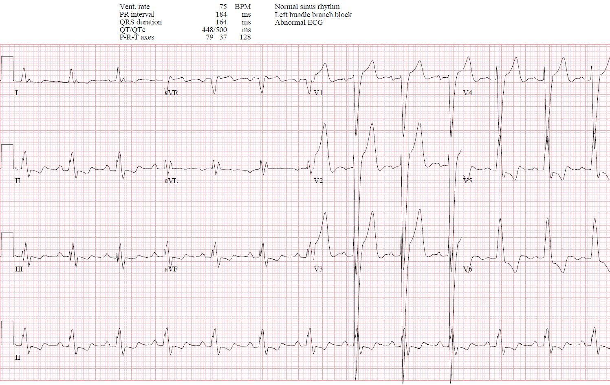
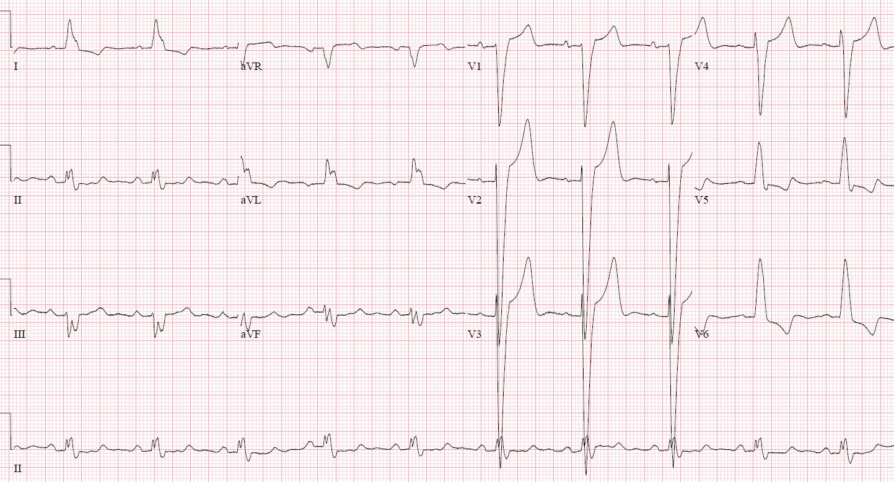
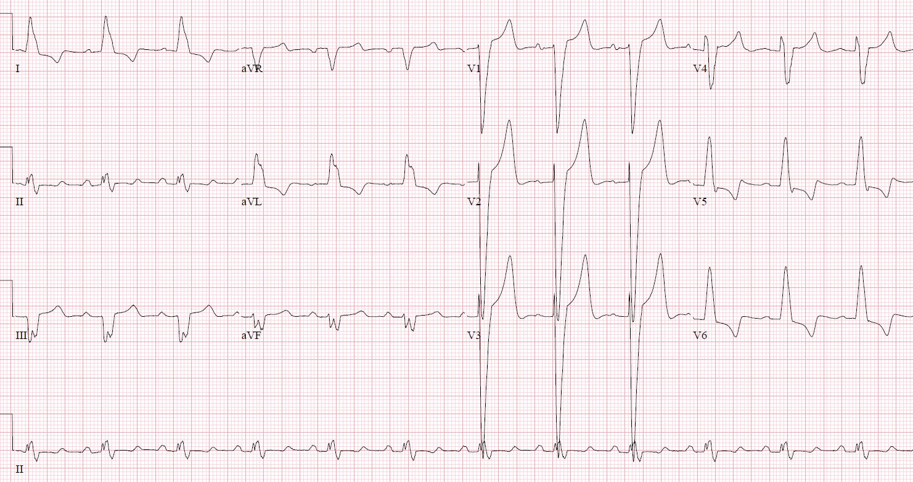
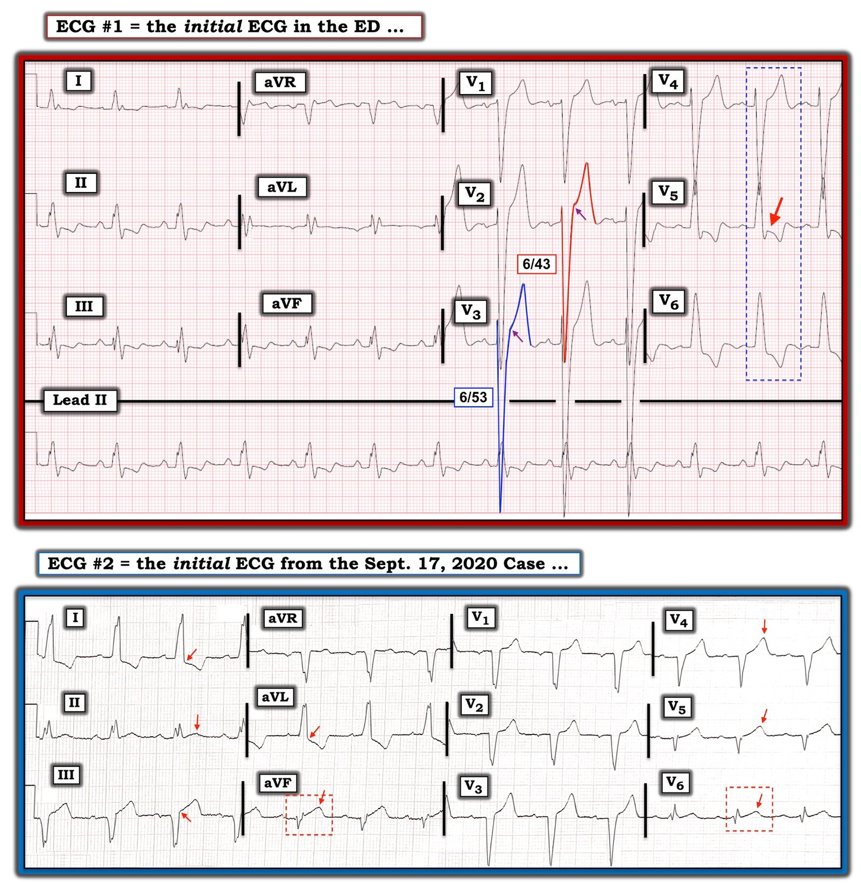

31/03/2022 — Đau ngực + troponin 1600 + LBBB + ST chênh lên 6mm = nhồi máu cơ tim do tắc, đúng không?
Bản dịch tiếng Việt của bài "Chest pain + troponin of 1600 + LBBB + 6mm ST elevation = occlusion MI, right?" – Dr. Smith’s ECG Blog. Giữ nguyên toàn bộ 6 hình ảnh của bản gốc.
Ca này do Jesse McLaren (@ECGCases) trình bày, kèm bình luận của Smith và Grauer
Một bệnh nhân 50 tuổi có bệnh động mạch vành (CAD) và bệnh thận giai đoạn cuối (ESRD) đến buổi
chạy thận nhân tạo định kỳ, than đau ngực khi gắng sức đã hai ngày.
Bệnh nhân được chuyển đến khoa cấp cứu (ED) khi troponin I độ nhạy cao trả về 1,526
ng/L (bình thường <26 ở nam, <16 ở nữ). Khi đến viện bệnh nhân đã hết đau,
huyết áp 180/70, các dấu hiệu sinh tồn khác bình thường. Bạn nghĩ gì?


Nhịp xoang kèm LBBB và thay đổi ST ngược hướng phù hợp (appropriate discordant): không có
ST chênh lên đồng hướng, không có ST chênh xuống đồng hướng ở
V1-3, và không có ngược hướng quá mức.
Vì đau ngực và troponin dương tính, bệnh nhân
được hội chẩn khẩn (STAT) chuyên khoa tim mạch ngay tại khoa cấp cứu; bác sĩ hội chẩn ghi nhận điện tâm đồ cho thấy
“LBBB đã biết, nay có ST chênh lên ngược hướng >5mm ở V2-3, dương tính theo
tiêu chuẩn Sgarbossa”. Phòng thông tim (cath lab) được kích hoạt, và một tổn thương 70% ở động mạch mũ đã được
đặt stent. Troponin tại khoa cấp cứu ba giờ sau lần xét nghiệm đầu là 1509, và tiếp tục giảm. Bệnh nhân có đau ngực + ST chênh lên + troponin tăng + tổn thương thủ phạm, nên được cho ra viện với chẩn đoán “STEMI”. Nhưng liệu bệnh nhân có thật sự bị
nhồi máu cơ tim do tắc (Occlusion MI) không?
Tắc mạch vành cấp được chẩn đoán dựa trên
biểu hiện lâm sàng (triệu chứng thiếu máu cục bộ), diễn tiến điện tâm đồ (tắc và tái tưới máu),
hình ảnh chụp mạch vành (dòng chảy TIMI 0-2), và mức tăng troponin đáng kể. Nhưng
không yếu tố nào tự nó là đủ: bệnh nhân có thể đã hết triệu chứng nhưng vẫn còn
bằng chứng tắc mạch trên điện tâm đồ, hoặc thiếu máu cục bộ kháng trị nhưng tắc mạch lại
“im lặng” trên điện tâm đồ, hoặc động mạch đã thông vào thời điểm chụp mạch nhưng troponin
tăng rất cao do lần tắc trước đó, hoặc troponin chỉ tăng nhẹ sau khi
tái tưới máu nhanh kèm dấu hiệu tắc/tái tưới máu trên điện tâm đồ.
Lâm sàng: nếu
bệnh nhân đến viện với thiếu máu cục bộ kháng trị hoặc mất ổn định huyết động thì họ
đã cần chụp mạch vành khẩn bất kể hình ảnh điện tâm đồ. Nhưng họ
đã hết đau và ổn định huyết động.
Điện tâm đồ: bệnh nhân được
ghi nhận có LBBB đã biết. Nhưng LBBB mới hay cũ thì không quan trọng,
vì “bệnh nhân tại khoa cấp cứu có LBBB mới hoặc được cho là mới không có tăng nguy cơ
AMI.”[1]. Bệnh nhân cũng được ghi nhận là thỏa tiêu chuẩn Sgarbossa với >5mm ST chênh lên
ngược hướng. Nhưng tiêu chuẩn Sgarbossa ban đầu áp dụng cho mọi
AMI được chẩn đoán bằng CK-MB, chứ không phải nhồi máu cơ tim do tắc được chẩn đoán bằng chụp mạch vành và
troponin — và ngay cả định nghĩa này cũng đòi hỏi tổng điểm 3, trong khi ST chênh lên ngược hướng
>5mm chỉ được 2 điểm. [2] Áp dụng tiêu chuẩn Sgarbossa không theo trọng số
làm giảm độ đặc hiệu, còn tiêu chuẩn Sgarbossa cải biên theo Smith
vừa nhạy vừa đặc hiệu. Tiêu chuẩn này định nghĩa ngược hướng quá mức
tương đối so với QRS (STE/S>25%), và dựa trên OMI được định nghĩa bằng chụp mạch vành
và nồng độ troponin.[3] Trong nghiên cứu thẩm định, STE/S>25% có tỷ số khả dĩ
dương là 99.6, và tỷ số khả dĩ âm là 0.20; dùng ngưỡng STE/S>20% vẫn cho tỷ số khả dĩ dương là
15, điều này có thể hữu ích ở bệnh nhân có khả năng tiền nghiệm cao, trong khi tỷ số khả dĩ âm là 0.16.[4]
Dưới đây là các điện tâm đồ cũ, mới và lúc ra viện của bệnh nhân
nói trên.





Trên điện tâm đồ lúc đến viện, ST chênh lên >5mm nhưng tương xứng với các sóng S rất sâu: ST/S ở V2 = 6/43 =14%; và ở V3 = 6/53 = 11%, cả hai đều thấp hơn nhiều so với ngưỡng 20% ngay cả khi khả năng tiền nghiệm cao. Không những không có
dấu hiệu tắc mạch trên điện tâm đồ ban đầu, mà cũng không có diễn tiến
tắc/tái tưới máu trên các điện tâm đồ theo dõi sau đó.
Chụp mạch vành: có một tổn thương 70% dạng mờ (hazy) ở động mạch mũ được đặt stent, cùng với hẹp 60% LAD và hẹp 40% RCA. Điều này xác nhận rằng mối lo ngại về ST chênh lên vùng trước là
không có cơ sở. Bệnh nhân được kích hoạt phòng thông tim vì ST chênh lên vùng trước
nhưng không hề có tắc LAD. Tắc động mạch mũ có thể
“im lặng” trên điện tâm đồ, nhưng nếu biểu hiện trên điện tâm đồ thì sẽ tạo ra
ST chênh xuống đồng hướng (do nhồi máu thành sau), hoặc ST chênh lên đồng hướng (do
nhồi máu thành bên), mà cả hai đều không có trên điện tâm đồ. Một tổn thương thủ phạm 70% vẫn có thể
phù hợp với một OMI đã tái tưới máu vào thời điểm chụp mạch,
nhưng không có diễn tiến điện tâm đồ nào gợi ý điều này và cũng không có mức tăng troponin
đáng kể (ví dụ >10,000 ng/L).
Troponin: trong OMI, troponin ban đầu có thể bình thường nhưng có thể tăng vọt lên hàng chục nghìn (ng/L với xét nghiệm độ nhạy cao). Một OMI được tái tưới máu nhanh có thể có troponin đỉnh thấp hơn. Nhưng troponin tăng nhẹ của bệnh nhân này đã bắt đầu giảm vào lúc họ đến khoa cấp cứu, phù hợp với việc triệu chứng đã hết và không có thay đổi trên điện tâm đồ.
Tóm lại, bệnh nhân này được chẩn đoán “STEMI” vì đau ngực + ST chênh lên + troponin + tổn thương thủ phạm. Nhưng cơn đau đã hết, ST chênh lên là tương xứng, động mạch thông và troponin chỉ tăng nhẹ. “STEMI” này là một NOMI. Bệnh nhân
được đưa đi thông tim khẩn dựa trên tiêu chuẩn Sgarbossa dương tính giả và
nồng độ troponin tăng, rồi được chẩn đoán “STEMI” dựa trên một tổn thương thủ phạm
đã được đặt stent. Nhưng họ không có bằng chứng lâm sàng hay điện tâm đồ của tắc
mạch vành cấp lúc đến viện; và diễn tiến điện tâm đồ, hình ảnh chụp
mạch vành cùng troponin đỉnh đã xác nhận chẩn đoán NOMI.
Hãy so sánh với ca
này, trong đó bệnh nhân có bằng chứng lâm sàng và điện tâm đồ của OMI — với thiếu máu cục bộ
kháng trị và tiêu chuẩn Sgarbossa cải biên dương tính — nhưng ban đầu không thỏa
tiêu chuẩn Sgarbossa truyền thống và đã tử vong sau khi phòng thông tim được kích hoạt muộn. Điều này
cho thấy mô hình OMI có thể tối ưu hóa quyết định đưa vào phòng thông tim để nhắm đúng những bệnh nhân có động mạch bị tắc cần tái tưới máu cấp cứu, và phân biệt họ với những bệnh nhân bị nhồi máu cơ tim không do tắc.
Điều cần nhớ:
1.
OMI dựa trên các yếu tố lâm sàng, thời điểm xuất hiện triệu chứng đối chiếu với hình ảnh điện tâm đồ, diễn tiến điện tâm đồ,
hình ảnh chụp mạch vành và nồng độ troponin
2.
Bệnh nhân LBBB không cần vào phòng thông tim vì
LBBB ‘mới’ hoặc vì ST chênh lên ngược hướng >5mm nếu mức này tương xứng với QRS đi trước
3.
Bệnh nhân LBBB thật sự cần vào phòng thông tim khi có
thiếu máu cục bộ kháng trị hoặc mất ổn định huyết động,
hoặc tiêu chuẩn Sgarbossa cải biên theo Smith (ST chênh lên đồng hướng, ST chênh xuống đồng hướng ở V1-3, hoặc
ST chênh lên ngược hướng quá mức, định nghĩa là STE/S>25% hoặc >20% ở bệnh nhân có xác suất tiền nghiệm
cao
4.
Nhồi máu cơ tim típ 1 nên được phân loại thành OMI hay NOMI
thay vì STEMI/NSTEMI để tối ưu hóa quyết định tái tưới máu
Tài liệu tham khảo
1.
Chang và cs. Lack of association between left
bundle-branch block and acute myocardial infarction in symptomatic ED patients.
Am J Emerg Med, 2009
2.
Sgarbossa và cs. Electrocardiographic diagnosis
of evolving acute myocardial infarction in the presence of left bundle branch
block. NEJM, 1996
3.
Smith và cs. Diagnosis of ST-elevation
myocardial infarction in the presence of left bundle branch block with the
ST-elevation to S-wave ratio in a modified Sgarbossa rule. Ann Emerg Med, 2012
4.
Meyers và cs. Validation of the modified
Sgarbossa criteria for acute coronary occlusion in the setting of left bundle
branch block: a retrospective case-control study. Am Heart J, 2015
================================
Một bình luận cuối cùng của Smith về ca của Jesse, về Tiêu chuẩn Sgarbossa Cải biên theo Smith, và về bình luận của Ken bên dưới:
Chẩn đoán OMI, ngay cả trong LBBB, vượt xa chuyện ST chênh lên, và điều đó có nghĩa là nó vượt xa việc chỉ đo tỷ số ST/S, hay tính đồng hướng, trong LBBB. Trong ca của Ken bên dưới, ông đưa ra ví dụ chuyển đạo aVF có giá trị chẩn đoán nhờ sóng T tối cấp, và cũng có một sóng T tối cấp ở V6. Nhưng trên điện tâm đồ đó, ca này DƯƠNG TÍNH theo tiêu chuẩn cải biên của Smith: tỷ số ST/S ở aVF là 1/4 hoặc 1/3.5, cả hai đều ≳ 0.25 và chắc chắn lớn hơn 0.20. Chỉ cần một chuyển đạo vượt ngưỡng tỷ số đã định là đủ!
Khi muốn đi sâu vào sắc thái của tỷ số ST/S trong tiêu chuẩn, tôi nói với mọi người rằng dữ liệu của chúng tôi cho thấy tỷ số ST/S BÌNH THƯỜNG cao nhất trong 12 chuyển đạo, tính trung bình, là 0.11. Và tôi nói rằng tôi bắt đầu lo ngại với bất kỳ giá trị nào trên 0.15, và 0.20 thì RẤT đặc hiệu cho tắc mạch, lại còn nhạy hơn cả 0.25.
Chúng tôi nhận thấy tiêu chuẩn cải biên của Smith chẩn đoán OMI trong LBBB tốt hơn nhiều so với tiêu chuẩn ST chênh lên chẩn đoán OMI khi dẫn truyền bình thường (điều mà hầu hết những ai biết lịch sử của LBBB hẳn phải thấy sửng sốt), và đó là vì tiêu chuẩn ST chênh lên không tính đến tính tương xứng (proportionality).
Hãy xem ca tuyệt vời này:
A Fascinating Demonstration of ST/S Ratio in LBBB and Resolving LAD Ischemia (Một minh họa hấp dẫn về tỷ số ST/S trong LBBB và thiếu máu cục bộ vùng LAD đang hồi phục)

===================================
BÌNH LUẬN CỦA TÔI, bởi KEN GRAUER, MD (31/3/2022):
===================================
Một bài trình bày xuất sắc của Dr. Jesse McLaren — minh họa “nghệ thuật đọc điện tâm đồ” trong đánh giá bệnh nhân đau ngực có LBBB nền. Như Dr. McLaren nhấn mạnh — việc xác định có hay không có OMI cấp ở một bệnh nhân như vậy đòi hỏi nhiều hơn hẳn so với đơn thuần “tổng các thành phần của nó”.
- Lần đầu tiên tôi học được cách trân trọng các khía cạnh định tính khi đánh giá mức độ cấp tính của thay đổi ST-T trong LBBB là vào những năm 1980, từ người thầy của tôi, Dr. Barney Marriott. Dr. Marriott đã cho chúng tôi xem rất nhiều ví dụ về bản ghi LBBB có thay đổi ST-T nguyên phát nhiều hơn mức lẽ ra phải có với LBBB đơn thuần. Dù một số ví dụ rất tinh tế — những ví dụ khác lại rõ ràng — vậy mà nhìn chung đều bị giới tim mạch bỏ qua.
- Tôi nhớ mình đã chờ đợi nhiều năm với hy vọng sẽ có y văn xuất hiện để biện minh cho việc nhận diện nhồi máu cơ tim cấp đi kèm LBBB. Cuối cùng, một thập kỷ sau (năm 1996) — Sgarbossa và cs. đã công bố bài báo trên NEJM với bộ tiêu chuẩn của ông, nay đã nổi tiếng và được trích dẫn thường xuyên (NEJM 334:481-487, 1996).
- Dù tiêu chuẩn Sgarbossa ban đầu hữu ích đến đâu cho việc nhận diện tắc mạch vành cấp — các tiêu chuẩn này đã không đưa vào khái niệm tính tương xứng. Về điểm này, chúng ta mang ơn Dr. Smith vì đã phát triển Tiêu chuẩn Smith-Sgarbossa Cải biên — trong đó, thay vì dùng một giá trị đo tuyệt đối là 5 milimét ST chênh lên làm tiêu chí “bất thường” — người ta dùng tỷ số giữa mức ST chênh lên tại điểm J so với độ sâu sóng S. Cái hay của phần bổ sung này vào tiêu chuẩn Sgarbossa ban đầu — là nó giúp đánh giá các bản ghi LBBB có sóng S vùng trước cực sâu.
Điện tâm đồ ban đầu hôm nay là một ví dụ tuyệt vời cho việc áp dụng Tiêu chuẩn Smith-Sgarbossa Cải biên. Để dễ nhận ra các số đo mà Dr. McLaren nêu ở trên — tôi đã tô màu các phức bộ QRS khổng lồ, chồng lấn lên nhau ở chuyển đạo V2 và V3, và thêm các mũi tên chỉ vị trí ST chênh lên tại điểm J (bản ghi PHÍA TRÊN trong Hình 1).
- Như Dr. McLaren đã nêu — các tỷ số lần lượt là 6/43 (14%) và 6/53 (11%) cho phép lập tức gạt bỏ mức ST chênh lên tại điểm J ở vùng trước vì hoàn toàn không gợi ý tắc mạch vành cấp.


Hình 1: PHÍA TRÊN — Tôi đã đánh dấu điện tâm đồ thứ 1 mà Jesse McLaren đưa ra trong ca hôm nay. PHÍA DƯỚI — Tôi đã đưa lại điện tâm đồ ban đầu trong bài ngày 17 tháng Chín năm 2020 trên Dr. Smith’s ECG Blog (Xem phần chữ).
Dù Tiêu chuẩn Smith-Sgarbossa Cải biên hữu ích đến đâu trong đánh giá bản ghi LBBB ở bệnh nhân đau ngực — tôi còn ưa dùng thêm một cách tiếp cận định tính dựa trên hình dạng ST-T thay vì các số đo. Tôi hoàn toàn thừa nhận rằng cách tiếp cận này dựa trên kinh nghiệm. Kết hợp nó với khái niệm tính tương xứng vốn có trong Tiêu chuẩn Smith-Sgarbossa Cải biên đã phục vụ tôi rất tốt trong nhiều năm qua.
- ĐIỂM THEN CHỐT (PEARL): Dù tiêu chuẩn Smith-Sgarbossa hữu ích đến đâu — tôi vẫn thích tìm những thay đổi ST-T mà tôi biết chắc là không bình thường ở bệnh nhân có LBBB. Để minh họa khái niệm này — tôi đã đưa lại điện tâm đồ ban đầu trong bài ngày 17 tháng Chín năm 2020 trên Blog của Dr. Smith (bản ghi PHÍA DƯỚI trong Hình 1). Bệnh nhân than đau ngực mới xuất hiện. Điện tâm đồ cho thấy nhịp xoang kèm LBBB.
- Tôi đã đóng khung bằng các hình chữ nhật nét chấm màu ĐỎ các phức bộ QRST ở 2 chuyển đạo thu hút sự chú ý của tôi nhất. Dù biết rõ rằng đánh giá thay đổi ST-T khi có LBBB thường cực kỳ khó — không thể nào mà khía điểm J, cùng đoạn khởi đầu ST thẳng đuỗn và đỉnh sóng T “phình to” không tương xứng ở chuyển đạo aVF, lại là bình thường. Xét biên độ QRS rất nhỏ ở chuyển đạo này — ST-T ở chuyển đạo aVF rõ ràng là tối cấp!
- Phức bộ QRST còn lại trong điện tâm đồ #2 rõ ràng không “bình thường” đối với LBBB — là ở chuyển đạo V6. Với LBBB điển hình — ST-T phải ngược hướng với sóng lệch cuối cùng của QRS ở các chuyển đạo bên I và V6. Bình thường, sóng T không được dương ở chuyển đạo bên V6 khi sóng lệch cuối cùng của QRS dương (như trong điện tâm đồ #2).
- Việc biết rằng có sóng T tối cấp ở chuyển đạo aVF và V6 ở bệnh nhân LBBB đau ngực mới xuất hiện này giúp dễ nhận ra những dấu hiệu ST-T khác, kém rõ ràng hơn nhưng chắc chắn bất thường, ở các chuyển đạo lân cận. Theo các mũi tên ĐỎ tôi thêm vào điện tâm đồ #2 — 2 chuyển đạo dưới còn lại cũng cho thấy bất thường (tức là ST chênh lên tại điểm J nhiều hơn dự kiến ở chuyển đạo III — và sóng T ở chuyển đạo II dương một cách bất ngờ và trông như tối cấp). Nếu đứng riêng lẻ, có lẽ tôi sẽ không để ý đến điểm J chênh xuống ở các chuyển đạo bên cao I và aVL — nhưng trong bối cảnh đau ngực mới xuất hiện và sóng T tối cấp ở thành dưới — tôi diễn giải điểm J chênh xuống ở I và aVL này là phù hợp với ST chênh xuống soi gương.
- Tương tự, theo khái niệm chuyển đạo lân cận — sóng T tối cấp ở chuyển đạo V6 được kẹp hai bên bởi các sóng T đầy đặn hơn mức đáng có ở chuyển đạo V4 và V5 — tạo thành 3 chuyển đạo liên tiếp có sóng T tối cấp ở các chuyển đạo ngực bên.
- ĐIỀU CỐT LÕI: Ở bệnh nhân đau ngực mới xuất hiện kèm LBBB này — không dưới 8/12 chuyển đạo trong điện tâm đồ #2 cho thấy những bất thường ST-T gợi ý OMI cấp. Thông tim xác nhận RCA tắc 100%, và đã được đặt stent.
- LƯU Ý: Với những ai quan tâm đến một cách tiếp cận dễ dùng trong chẩn đoán các blốc nhánh trên điện tâm đồ (gồm một Video điện tâm đồ dài 13 phút và tệp PDF tải về) — Mời xem ECG Blog #282.
- Các bài khác trên Blog của Dr. Smith mà tôi đã bình luận về khía cạnh định tính của các bản ghi LBBB gồm — bài ngày 7 tháng Tư năm 2019 — bài ngày 16 tháng Mười Hai năm 2019 —
Quay lại một chút với điện tâm đồ #1 — trong đó tôi đã tô màu biên độ QRS rất lớn ở chuyển đạo V2 và V3. Khi lần đầu xem điện tâm đồ này, sau khi xác định rằng tiêu chuẩn Smith-Sgarbossa cải biên không được thỏa — tôi đã tìm các đặc điểm định tính trên bản ghi LBBB này.
- Tôi thấy các đoạn ST dốc xuống kèm phần cuối sóng T hai pha ở mỗi chuyển đạo dưới trông bất thường — nhưng không đặc hiệu. Chỉ từ một bản ghi này — tôi không thể biết đây là dấu hiệu mới hay cũ.
- 1 chuyển đạo trong điện tâm đồ #1 thu hút sự chú ý của tôi nhất là chuyển đạo V5. Theo mũi tên ĐỎ ở chuyển đạo này — có điểm J chênh xuống kèm ST dạng vòm (coving) và sóng T đảo ngược. Một mặt — tôi nghĩ điều này có khả năng là một dấu hiệu cấp tính. Mặt khác (như được gợi ý bằng cách đóng khung trong hình chữ nhật nét chấm màu XANH) — đây có thể chỉ đơn thuần là một dấu hiệu của “chuyển đạo chuyển tiếp” — vì hình thái ST-T ở chuyển đạo V5 có vẻ trung gian giữa ST-T dương, rất lớn ở chuyển đạo V4 — và ST-T chênh xuống sâu ở chuyển đạo V6.
- ĐIỀU CỐT LÕI: Tôi không chắc chắn liệu ST-T ở chuyển đạo V5 có phải là một dấu hiệu cấp tính hay không. Dù vậy — tôi không thấy ST chênh lên cấp tính nào trên điện tâm đồ #1, nên không có dấu hiệu OMI cấp trên điện tâm đồ. Phân tích sắc sảo sau đó của Dr. McLaren đã làm rõ rằng ổ nhồi máu trong ca hôm nay là một NOMI, và không phải hậu quả của tắc mạch vành cấp.
======================
ĐIỂM THEN CHỐT CUỐI CÙNG (PEARL): Đánh giá LVH rõ ràng khó hơn khi có LBBB. Vì LBBB làm thay đổi trình tự khử cực thất — các tiêu chuẩn điện thế thông thường để chẩn đoán LVH không còn áp dụng được. Ngoài ra, trình tự tái cực thất cũng bị thay đổi. Do đó — ST chênh xuống không đối xứng (nhánh xuống chậm hơn; nhánh lên nhanh hơn) là một dấu hiệu được dự kiến với LBBB, và không thể mặc định là do “tăng gánh” thất trái hay thiếu máu cục bộ.
- Hầu như mọi bệnh nhân bị LBBB hoàn toàn đều có một dạng bệnh tim nền nào đó. Do đó — về mặt thống kê, bệnh nhân LBBB là một quần thể có tỷ lệ hiện mắc cao đối với LVH.
- Sự hiện diện của sóng S rất sâu (tức là >25-30mm) ở một hoặc nhiều chuyển đạo trước (tức là V1, V2 và/hoặc V3) tương quan chặt chẽ với LVH ở bệnh nhân LBBB. Gần như chắc chắn có LVH trên bản ghi PHÍA TRÊN trong Hình 1.